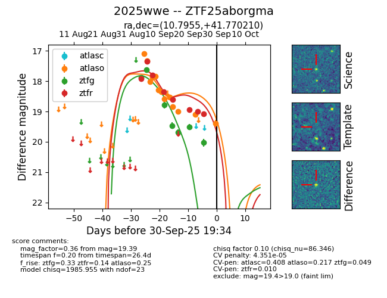
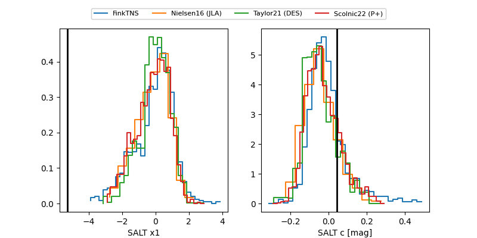

FINK: ZTF25aborgma
Lasair: ZTF25aborgma
ALeRCE: ZTF25aborgma
TNS: 2025wwe
YSE: 2025wwe
ZTF25aborgma (ztf,fink)
2025wwe (tns,yse)
equatorial (ra, dec) = (10.7955,+41.77021)
galactic (l, b) = (121.2823,-21.07509)


last atlaso=19.39, ztfg=20.03, ztfr=19.07
13 atlaso, 7 ztfg, 8 ztfr detections